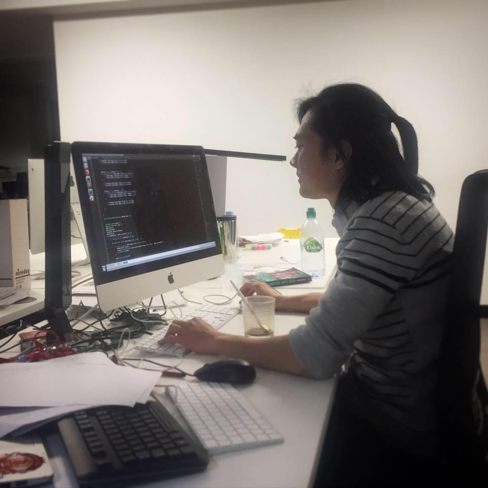

Hoang-Giang Cao
I work on AI/Deep Reinforcement Learning for Robotics, Autonomous Driving and Computer Game.
In Robotics, my research focus on object representation for robotic manipulation. In Computer Video Game, my research focus on using AI/Deep Reinforcement Learning to achieve human level. I also do research on Autonomous Driving, the topic is about using image-based regularization for smoothness policy in autonomous racing car.
I did my PhD at Computer Game and Intelligence (CGI) Lab with Professor I-Chen Wu. National YangMing ChiaoTung University, Taiwan.
